The Story of Kashmir: Part 1
- 20 mins
On the night of 26th October 1947, king Hari Singh handed his pistol to his A.D.C (personal Secretary) and ordered him, “If the Indian Army doesn’t reach Srinagar by tomorrow morning, make me sleep for the rest of my life.”
Feels like scenes from a dramatized movie right? Such has been the case for Kasmir for many years now. This blog is about Kashmir. Kashmir, which for centuries has been the center for art, culture, mathematics, science, language, spirituality, and of course politics. I will try to present each and every event with respect to Kashmir from its discovery to abrogation of Article 370, its significance, how it was done, what led to this article and other such topics along with proper facts, official documents from the UN, Indian Constitution and various letters, reports written at the time of these events. Since the story spans for decades and many things are important in it. This story is divided into multiple blogs for a better understanding of things.
Disclaimer:
- I have tried to gather all the facts and sources by myself, though it is correct to my knowledge and research, I am open to other findings or mistakes which I might have incurred unintentionally.
- These are my personal opinions and interpretations from the various official sources, I don’t want to blame any political party or personality or any religion. Rather I believe that the Kashmir issue is about humanity not about religion.
The Discovery and History
The word Kashmir was derived from the Sanskrit word Kasmira. The Nilamata Puran describes the valley origin from a lake sati-saras or Parvati lake. ( as mentioned in M.J. Akbar's book Kashmir, behind the vale.) the legend has it, the lake was occupied by a demon named Jalodbhava. Lord Vishnu took the incarnation of a boar(Varaha) and struck the mountain at varahmulla presently (Baramulla) to let the water to flow out of the lake. Geologists agree that the valley was formerly a lake, and the lake drained through the gap of Baramulla. (as mentioned in Raina, Mohini Qasba's book Kashur the Kashmiri Speaking People). Another legend mentions Kashmir as a place where Rishi Kashyap lived, with the lake mentioned as Kashyapa-mir and the mountain as Kashyapa-Meru. Greeks mentioned Kashmir as Kasperia in various sources for example Plotemy in his book. Kashmir was also mentioned in Pannini Ashtadhyayi. Later, Chinese traveler Hieun Tsang visited Kashmir and mentioned it as Kia-shi-milo. Sixth sikh guru, Guru Hargobind also visited Kashmir.
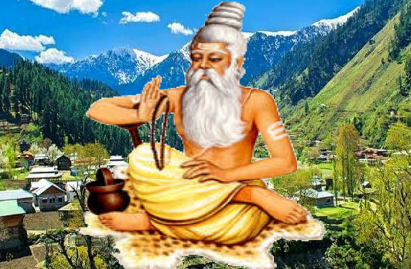
Many dynasties ruled Kashmir with many important rulers like Lalitaditya a powerful ruler of the Karkota Dynasty, Queen Kota Rani who constructed canals to save Srinagar from floods. Even old Srinagar city was discovered by Mauryan Empire and named it Srinagari. Thus Kashmir has many Hindu and Buddhist Shrines including Martand sun temple, Sharda-Peeth, Shankaracharya-Peeth, Stupa at Baramulla, etc. Later, Shah-Mir Dynasty was the first Muslim ruler in the state, followed by Mughals, who constructed many monuments in the area. Followed by Afghans and the Durrani empire. Sikhs under Raja Ranjit Singh then conquered Kashmir Valley after the Anglo-Sikh war rule passed to the British East India Company. Kashmir was considered a princely state. The last Monarch of Kashmir was Raja Hari Singh of the Dogra clan, He was succeeded by Karn Singh. Both Hari Singh and Karn Singh had a major influence on Kashmir's present state.
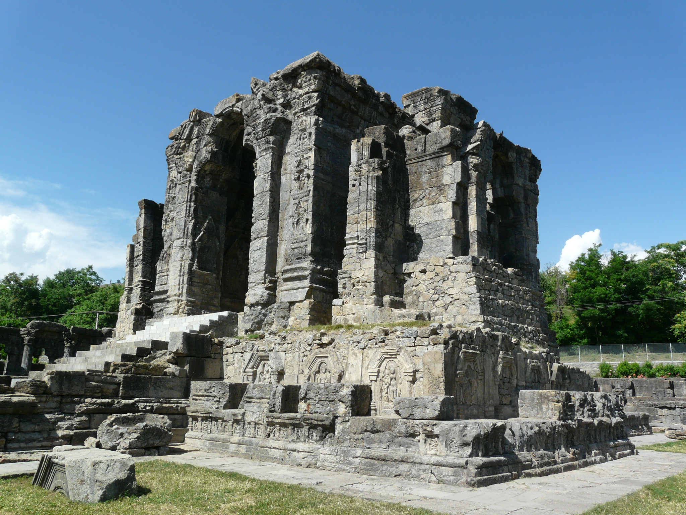
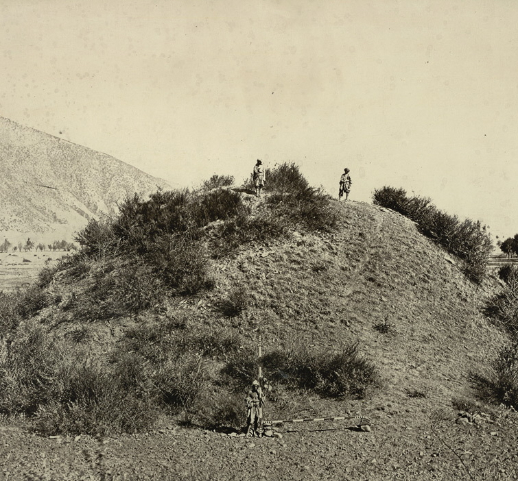
At the Time of Independence
Louis Mountbatten the last viceroy of India and the first governor-general of India sensed that Kashmir shares a border with both India and Pakistan and both the country would want to control the state. He talked with the then ruler of Kashmir Raja Hari Singh regarding the same. Raja had some different plans in mind, he wanted Kashmir to be an independent state. Mountbatten knew this cannot happen and may eventually lead to war between the two countries. Mountbatten at that point urged the king to form an opinion and suggested merging with India. The talks couldn’t reach any endpoint at that time. Mountbatten suggested Raja to think over the issue and form an opinion until the next day. Mountbatten went to the palace once again to meet the king but the king made an excuse, his servant informed Lord Mountbatten that he was suffering from a stomach ache. This was Hari Singh's common excuse when he didn't want to meet anyone. Little did he know that this stomach ache would become a Headache for millions of people for decades to come.
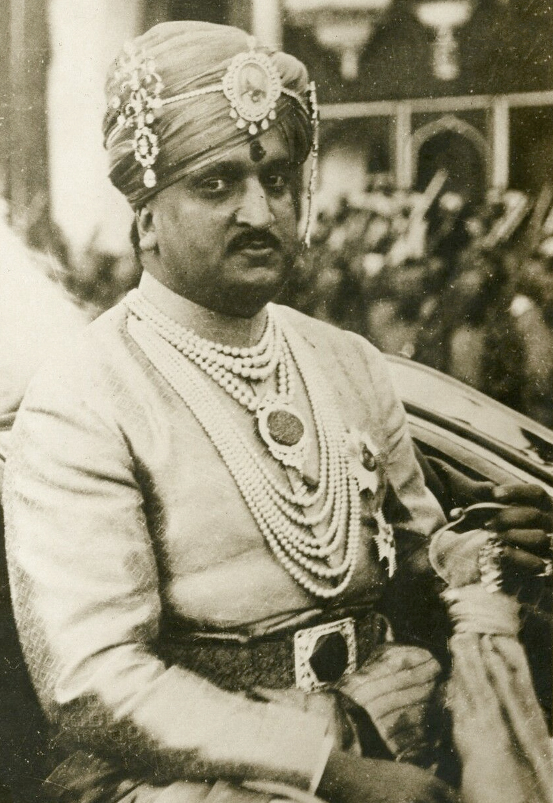
As we all know at the time of Independence there were around 543 princely states in India, getting all these together was a very difficult task. It was possible because of two very important personalities Sardar Vallabhai Patel and V.P. Menon (I.A.S officer). India was unlucky that Mahatma Gandhi died in 1948 and Sardar Patel in 1950. The situation would have been very different otherwise.
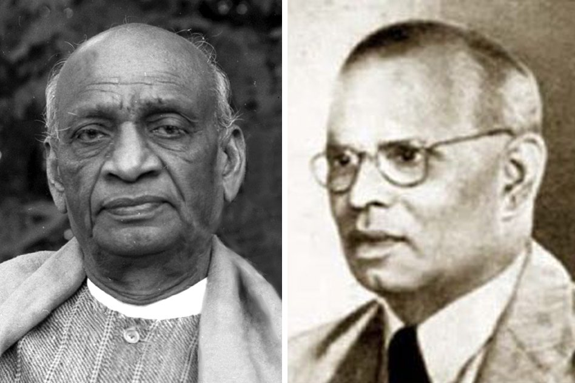
The Panchayati raj system would have been added to the constitution long ago and the situation of Kashmir would not be like this. Many claims that Gandhi always wanted Nehru to be prime minister because of favoritism. I beg to differ on that part, I think Nehru was young and new India needed someone to lead for some years to make things stable. Moreover, we should understand the fact that Nehru was very young at that time. He was leading a very diverse country for the first time. There were many challenges both internal and external. He wanted to create a powerful image of the nation in the global scenario. We should understand that mistakes are bound to happen. I agree that Nehru committed some mistakes in the case of Kashmir but I don’t think that was intentional.
One more major incident took place at that time Sheikh Abdullah who graduated from Aligarh Muslim University went to Kashmir to get a job. He was not allowed to take any important job though he was very educated. All the important jobs were taken up by Hindus at that time. Sheikh Abdulla was against monarchy; he wanted democracy. One more important thing to note here is that Sheikh Abdullah was against Muslim League and was not in favor of merging Kashmir with Pakistan until this point. Later, he started negotiating with Pakistan as well. We will look at how it happened and how Sheikh Abdullah came to power. Sheikh Abdullah was also a good friend of Jawahar Lal Nehru maybe because they shared the same ideology. Sheikh Abdullah was imprisoned by Raja Hari Singh for inciting the crowd against the King. For understanding Kashmir, we need to understand what happened in Hyderabad and Junagadh.
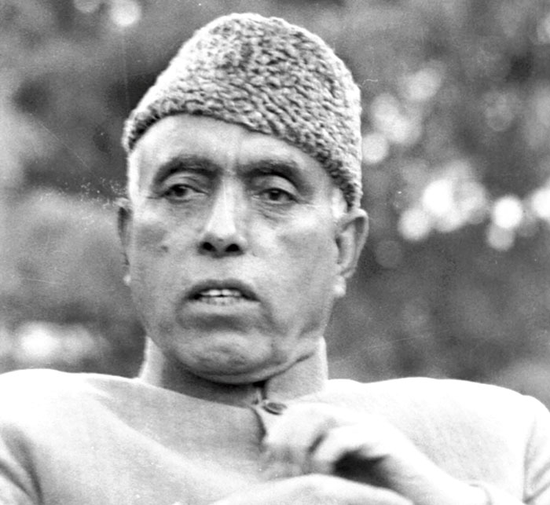
Junagadh and the Plebiscite
Junagadh princely state contained part of Saurashtra and was ruled by Nawab Mahabat Khan, Mahabat khan was very fond of dogs, he even organized marriage of his dogs and declared holiday in the state for the same.
Mahabat khan, ruling a majority of the Hindu population, wanted to merge with Pakistan. His state didn’t even share a boundary with Pakistan. He signed the letter of accession to Pakistan on 15 September 1947, citizens revolted against this decision of the king. The king fled with all his dogs and belongings to Pakistan but left one of his queens and a child by mistake in India. His Dewan Shah Nawaz Bhutto ( father of Zulfikar Ali Bhutto who later became Prime Minister of Pakistan) asked India to take over Junagadh. Sardar Patel and Nehru insisted on conducting a Plebiscite where citizens would decide whether they want to be part of India, Pakistan, or remain free. Citizens voted heavily in favor of India and thus it became an integral part of the country.
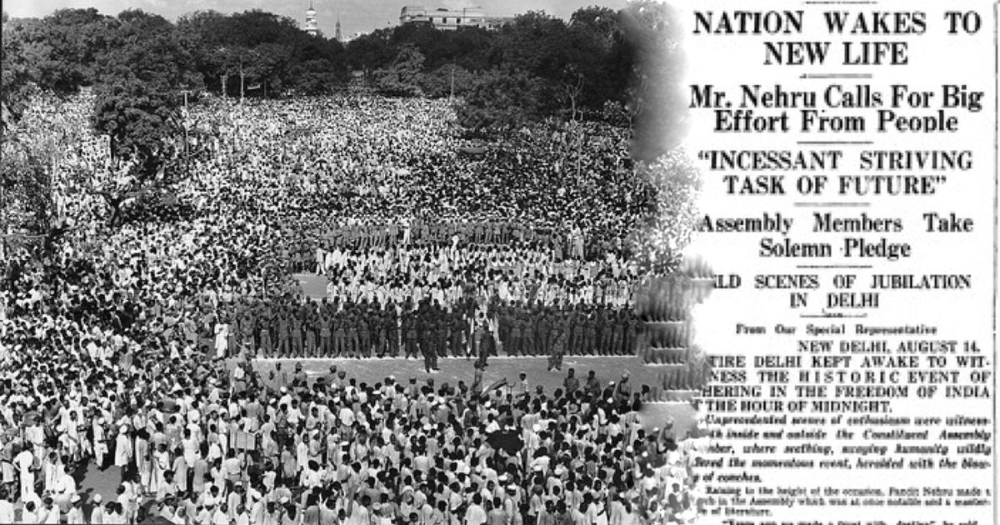
This issue brought Plebiscite into the picture and a similar kind of thing was demanded in Kashmir, but by whom? India or Pakistan or the people of Kashmir we will look into it. Meanwhile, one more important incident took place: Hyderabad Nawab entered a standstill agreement with the Indian government for one year to decide whether he wanted to merge with India or Pakistan or remain free, from November 1947 till November 1948.
Chain of Events in Kashmir
These are the most important and suspenseful series of actions that took place in Kashmir. I have read many sources for the same, If you want to know more you can refer to:
- Kashmir Behind the Vale: M.J Akbar
- Kashmir, 1947: Rival Versions of History: Prem Shankar Jha ( Hourly description of the events)
- The Kashmir Dispute, 1947-2012: A.G. Noorani
- Ram Chandar Guha : India After Gandhi, India After Nehru.
20/10/1947 - Pakistan Tribesmen Army
Jinnah the governor-general of Pakistan ordered Akbar Khan, general of Pakistan to start a military operation in Kashmir. Pakistan wanted to use this military operation to remove Hari Singh from power, remove all the people who weren’t Sunni Muslims from Kashmir and then merge Kashmir with Pakistan. Akbar khan created a force constituting tribesmen from the present day Waziristan and the Pakistan army, they wore normal clothes and started off with their mission in a large fleet of trucks. ( This is not a made-up story or something which is common folklore. Pakistan agreed to it in the UN later. It is there in the official documents). Hari Singh got to know about this and ordered his army to retaliate. Brigadier of Hari Singh’s army Rajinder Singh took command of the army. Pakistan’s tribesmen army reached Muzaffarabad in no time which happens to be the capital of the present-day Pakistan Occupied Kashmir. On seeing the situation worsen Raja Hari Singh asked V.P Menon for help from the Indian government. Nehru, Patel, and Mountbatten sat together to discuss further courses of action. Both Nehru and Patel insisted on sending the Indian Army to Kashmir. Mountbatten refused as Kashmir was not part of India and sending the Indian army to a foreign land would mean starting an International War which was against the policy of the newly formed UN ( Britain was also a founding member of UN).
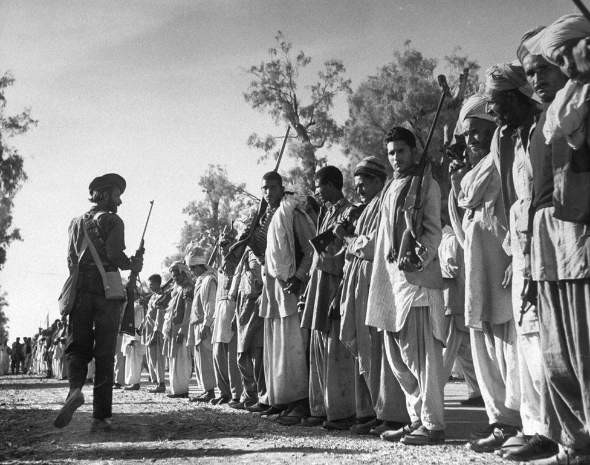
The Prime Minister of Raja Hari Singh: Mehr Chand Mahajan who later became the judge of the Supreme court of India was closely monitoring the situation along with V.P Menon. The Tribesmen army reached Uri. There was a bridge that connected Uri with Srinagar. Rajinder Singh destroyed that bridge thus, the army couldn’t reach Srinagar and two days of spare time was achieved. Rajinder Singh died fighting that day. Rajinder Singh and his men along with local Sikhs fought very hard that day ( remember that Guru Hargobind was there in Baramulla and Sikh rule in Kashmir). These local men along with the army of Rajinder Singh were greatly outnumbered still they were able to control the tribesmen's army to enter Srinagar.

25/10/1947 - The Baramulla Massacre
Tribesmen's army reached Baramulla. It was a horrifying day for the people of Baramulla, as stated by Sheikh Abdullah at the UN. on 5 February 1948: "The raiders came to our land, massacred thousands of people – mostly Sikhs, but Hindus and Muslims, too – abducted thousands of girls, Hindus, Sikhs and Muslims alike, looted our property and almost reached the gates of our summer capital, Srinagar.". The raiders/tribesmen army didn’t spare anyone, according to reports after this tragedy only 1/3rd of the population of Baramulla survived. Thousands of women were raped, many houses looted, and many more killed. The raiders entered St. Joseph’s Church school and the hospital where Colonel Dykes was with his wife were shot dead. A Muslim patient who just gave birth to a child was shot dead along with 9 nuns. The raiders didn’t stop at this; they were offered resentment from Sikhs and Hindus in the area, who fought their life to safeguard Srinagar.
Raja got the news of all this and thus ran for his life with all the cars and important belongings to Jammu. V.P Menon along with Mehr Chand Mahajan stayed at Srinagar to assess the situation. As the situation worsened on the night of 25th March V.P Menon along with Mehr Chand Mahajan ran to Jammu in a broken jeep which was the only vehicle they got. Till now Kashmir was not part of India thus, the Indian army couldn’t come to the rescue.
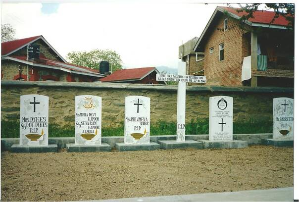
26/10/1947: Kashmir accedes to India
V.P Menon and Mehr Chand Mahajan insisted to Raja Hari Singh that the only way to save Kashmir now was to sign on the letter of accession, Raja agreed. V.P Menon rushed to Delhi, got the letter of accession and returned to Jammu, got the letter signed by the King, and went to Delhi again. Raja in the night before going to sleep asked his A.D.C by handing over his pistol that “If the Indian Army doesn’t reach Srinagar by tomorrow morning, make me sleep for the rest of my life.”
Nehru, Patel, and Mountbatten met and discussed sending the troops to Kashmir. Mountbatten was still not agreeing as he thought India lacked resources to go to war at this point in time. Patel and Nehru were stern in their approach and thus on 27th October 1947, just after midnight that is around 12:30 am Lord Mountbatten signed the letter of accession. Kashmir now became a part of India.
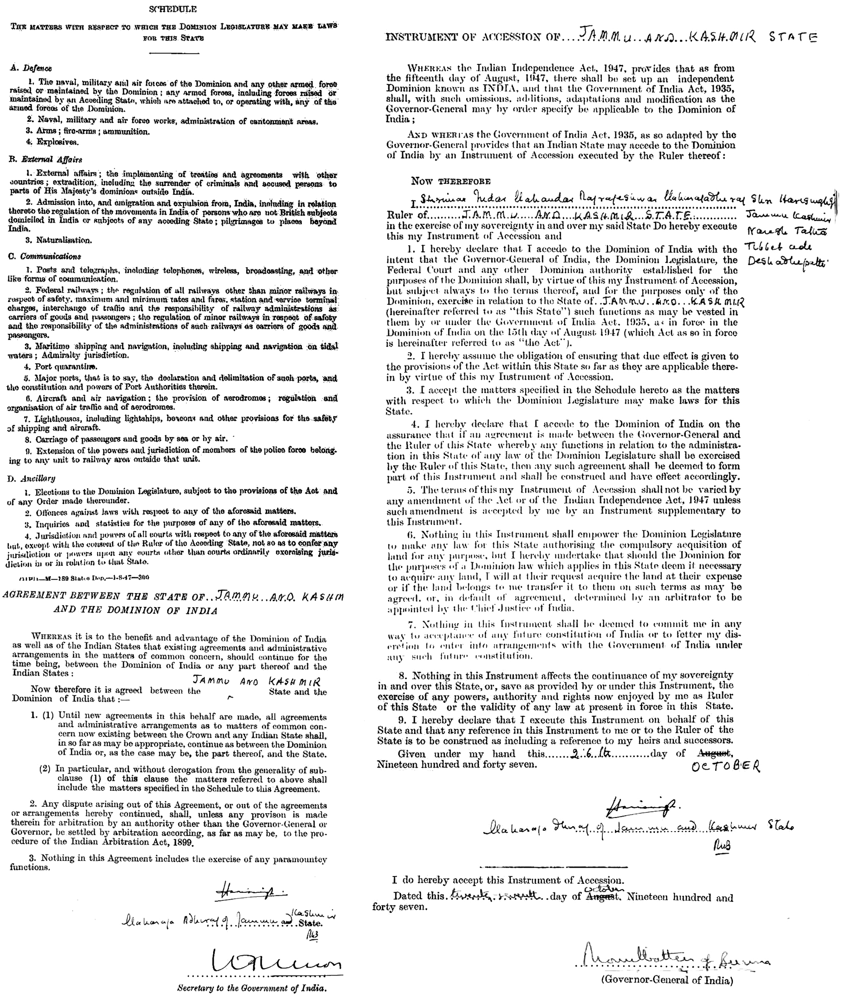
27/10/1947: Indian Army lands in Kashmir
Srinagar was surrounded by the Tribesmen army. People of Srinagar feared what they have heard about Baramulla. Amidst all this, Indian Army aircraft and choppers landed in Srinagar. People welcomed the army with a lot of cheer. Sheikh Abdullah who was prisoned by Raja Hari Singh was released from Prison on the advice of Nehru. Sheikh Abdullah and his men provided support to the Indian Army in fighting Pakistan’s army. The situation started shifting in India’s favor.
Jinnah ordered General Messervy to send Pakistan’s army to fight the war. One thing to note here is at the time of Independence the Commander-in-chief of the army for both India and Pakistan was the same and he was Sir Claude Auchinleck. Thus, in a way even after independence for some time, the army was in control of Britain so that the nations didn't end up fighting each other. General Messervy rejected the order of Jinnah and asked for permission from Commander-in-chief ( Sir Auchinleck). Jinnah asked Auchinleck for the same; he also denied permission for war as he was not involved with international war since world war II just ended and the United Nations was formed to mitigate international war. Secondly, since the army of both India and Pakistan was headed by Britain it would be like one part of Britain's army fighting another part of Britain's army. He didn’t want to waste Britain’s resources for Jinnah as Kashmir has already acceded to India. Jinnah didn’t agree to accession as he had Junagadh in mind. Mountbatten also suggested plebiscite when he was signing the letter of accession.
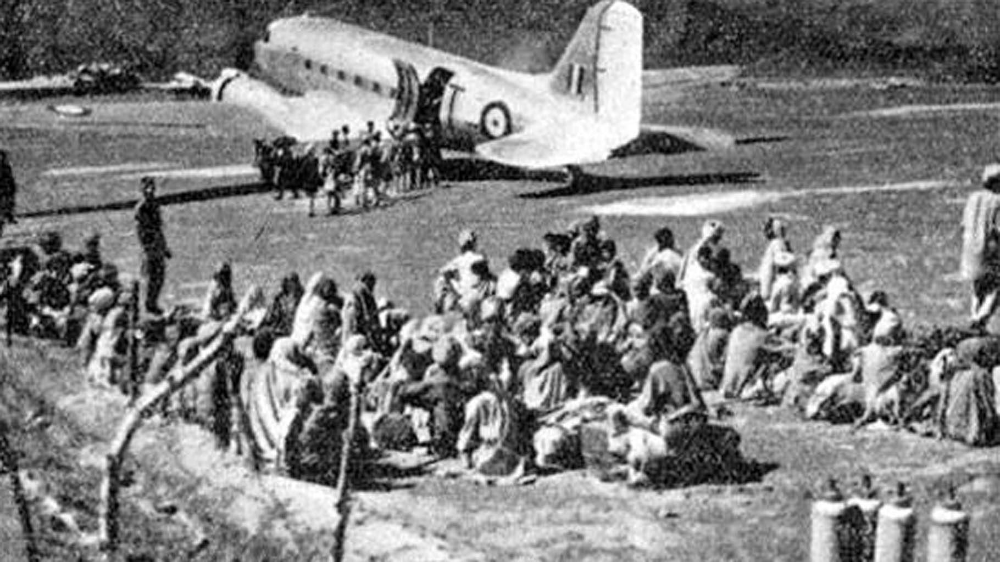
2/11/1947: Announcement of Plebiscite by J.L. Nehru
Jinnah asked Lord Mountbatten, Jawahar Lal Nehru to meet in Lahore and discuss the matter so that an agreement could be reached. Patel did not agree to Nehru attending this meeting as Pakistan was the aggressor in the matter and Kashmir now was an integral part of India. Jawahar Lal Nehru boycotted this meeting. Mountbatten met Jinnah in Lahore and they talked about plebiscite while all this was going on. Nehru on 2nd November 1947 in a private room of All India Radio without consulting anyone announced that as soon as the situation in Kashmir would come into control a plebiscite would take place. With this announcement, the situation started slipping from India’s hand.
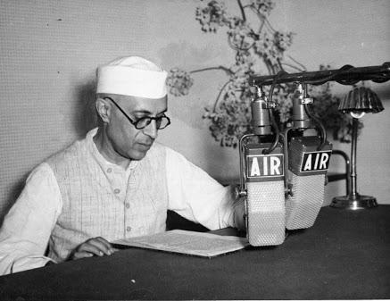
On 31/12/1947 Jawahar Lal Nehru reached the United Nations and filed a complaint according to Chapter 6. Why chapter 6? Because chapter 6 orders are not abiding. That is, whatever the United Nations suggest for the resolution of this issue is not final and abiding by the nations. We will look at the UN resolution and its details later.
Many people consider these as mistakes of Jawahar Lal Nehru. It can be if you look at the situation. India was able to cover up a major part of Kashmir and was able to remove Pakistan’s army to present Pakistan-occupied Kashmir. If the Indian army would have got a little bit more time. We wouldn’t be discussing the Kashmir issue today. Moreover, Nehru brought up plebiscite as an option when Kashmir was already a part of India. Why Nehru did this can be understood by what happened in Hyderabad.
Hyderabad and Indian Police Invasion
Hyderabad wanted to merge with Pakistan, which was not possible. It was surrounded by India from all sides, and also the distance between Pakistan and Hyderabad was also large. The Nawab still wanted to merge with Pakistan and was supported by an organization known as Majlis-e-ittehadul muslimeen or MIM. This organization supported Nawab's idea of merging with Pakistan or remaining independent. This was a radical Muslim organization that later changed to AIMIM which is a political party headed by Asaduddin Owaisi. This party also had a part known as Razakar or volunteers, they were very violent in their approach. They started killing or I would say mass-murdering people who were in support of India, mostly Hindus. What happened in Baramulla was happening in Hyderabad as well. India couldn’t take any step as they were in a standstill agreement. Later, on 13/9/1948 the Indian government started Operation Polo. Within 5 days, by 18/9/1948 Hyderabad was annexed to India. Jawahar Lal Nehru constituted a committee known as the Sunderlal Committee to take account of loss in Hyderabad. The committee reported that a total of 2 lakh people died in Hyderabad by the action of Razakars and during the annexation. Nawab of Hyderabad reached UNSC for help and blamed India for using military action. This was handled at the UN but Jawahar Lal Nehru didn’t want the global image to go down any further. He didn’t want India to be seen as an occupier. Thus reached the UN for the Kashmir issue.
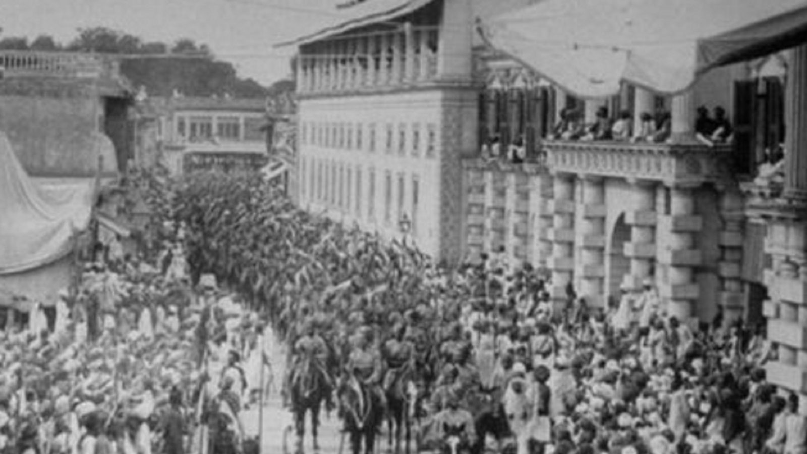
UN Resolution 47
The UN gave its resolution, resolution 47 with respect to the Kashmir issue. I have also attached the resolution for your reference. The resolution contained a three-step process to solve the Kashmir issue.
- Ceasefire: Both the nations were ordered to obey the ceasefire and the line of control would be the same as that on 31/12/1948. That is the war has to stop, both countries respect the new boundaries which would be the position their respective armies are at that particular moment. In this way, India got 2/3rd part of Kashmir and 1/3rd went to Pakistan for a ceasefire. This was temporary and would change later as described in further points.
- Since Pakistan agreed to send Pakistan army men in local clothes and tribesmen. Pakistan was asked to remove its army from Pakistan-occupied Kashmir and also the tribesmen have changed the population dynamics so they should also be removed from the Kashmir area.
Once Pakistan removes its forces and tribesmen. India should also start dematerializing but India can maintain a small amount of army for the safety of its citizens and moreover since Kashmir acceded to India.
- Others: Once the dematerialization process is over plebiscite should be conducted in the state as both the nations agreed to the same.
India agreed to the resolution but Pakistan denied it. Moreover, plebiscite could not be conducted in the state because Pakistan never fulfilled the first condition. Many people blame the Indian government even though Pakistan in the UN does that without understanding the fact that Pakistan first has to leave Pakistan-occupied Kashmir for the plebiscite to happen.
The USA and England voted against India in this resolution. This can be explained by the cold war policy of the USA as India was more inclined towards Russia and China.
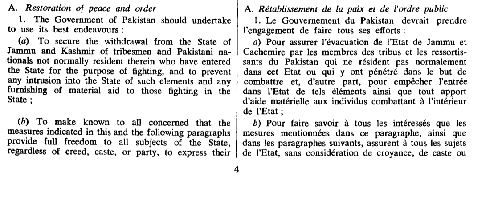
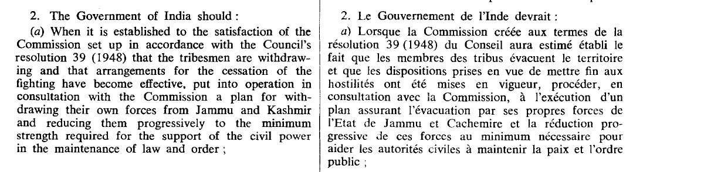
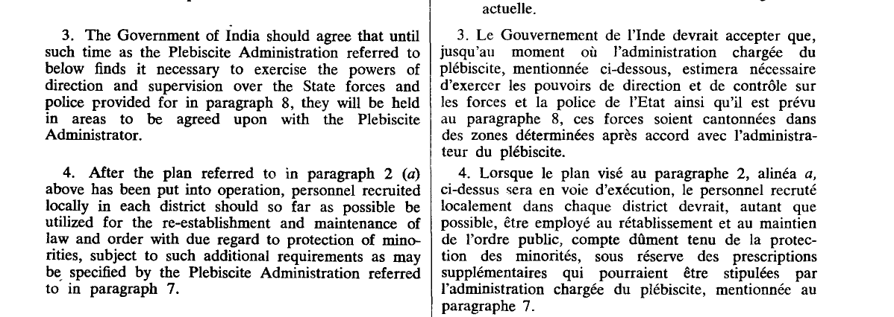
Thoughts, Interpretations, and Way Ahead
Jawahar Lal Nehru always had an idealistic approach, unaware of the shrewd tactics of world politics. Moreover, Nehru was very keen on protecting his image as the world leader. Whatever he did was correct or not you have to decide. I think the situations were such that Nehru decided this could be the best approach. Nehru believed that India had just now come out of colonial rule. Using force to establish rule in a state is the same as colonizing it, which is not correct ideally. Thus, a plebiscite should take place. Moreover, people residing in Jammu and Ladakh area always wanted to merge with India, Kashmir under the influence of Sheikh Abdullah would also vote for India. This might have been in Jawahar Lal Nehru’s mind when he took the decision of Plebiscite. Little did he know that later Sheikh Abdullah would start negotiating with Pakistan as well. Nehru took the issue to the UN because India was not an aggressor, he was unaware of the double standards of the USA.
The USA at that particular moment voted against India as part of the cold war strategy. The USA blamed India for illegally occupying Kashmir as a federation government where many states have come together. Their constitution allows these states to move out of the federation. But, still, it was not allowed in 7 states during the USA civil war. Many people of Texas still believe that they are not part of the USA but have an independent state of Texas.
Similarly, China has acquired Tibet with sheer force, nobody blames China for this. When we look at India. Hyderabad was added by force, as were Andaman and Nicobar, Goa, and Daman and Diu. Lakshadweep is added to India because India reached Lakshadweep half-hour before Pakistan. Tribal people of Lakshadweep were unaware of what the country meant, forget about the plebiscite. All these are now integral parts of India. If we think by this approach we may find Sardar Patel's approach would have been better for Kashmir. But, what about the people of Kashmir they were promised a plebiscite. Plebiscite also has certain drawbacks, in this case, the majority of the population is Muslim if they take the decision of merging with Pakistan what about the population of other religions residing there? Would it be fair for them to leave their ancestral houses and culture behind, and merge with an Islamic country? Plebiscite I think can never happen. I can never imagine Pakistan removing its forces from Pakistan-occupied Kashmir. Even if we remove that area the population of Muslims and that of other religions is nearly the same in this case imposing the decision of one community over the other based on a handful of votes is against the ideal principles of democracy. Moreover, the citizens of Kashmir chose a constitutional assembly to create their own constitution in which it is clearly stated Kashmir was, is, and always will be an integral part of India.

So what went wrong? How does article 370 come into the picture? Why did Sheikh Abdullah start negotiating with Pakistan? What is Shimla's accord? Why were wars fought in 1965, 1971, and 1971? Why genocide of Kashmiri pandits took place? How abrogation of article 370 changes the dynamics? How was article 370 removed? If it was that easy, why was it not done before? Answers to all these questions in the upcoming blog.
Abhishek Parashar
A spiritual Outlier in the materialistic dataset.